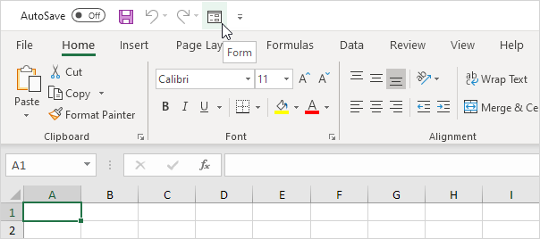

Jika Anda sering menggunakan perintah Excel, Anda dapat menambahkannya ke Bar Alat Akses Cepat. Secara default, Quick Access Toolbar berisi empat perintah: AutoSave, Save, Undo, dan Redo.
Bar Alat Akses Cepat 101
Untuk menambahkan perintah ke Bar Alat Akses Cepat, jalankan langkah-langkah berikut.
1. Klik kanan perintah tersebut, lalu klik Add to Quick Access Toolbar.
2. Anda sekarang dapat menemukan perintah ini di Quick Access Toolbar.

3. Untuk menghapus perintah dari Quick Access Toolbar, klik kanan perintah tersebut, lalu klik Remove from Quick Access Toolbar.

Perintah Tidak di Ribbon
Untuk menambahkan perintah ke Bar Alat Akses Cepat yang tidak ada di Ribbon, jalankan langkah-langkah berikut.
1. Klik panah bawah.
2. Klik Perintah Lainnya.

3. Di bawah Pilih perintah dari, pilih Perintah Tidak di Ribbon.
4. Pilih perintah dan klik Tambah.

Catatan: secara default, Excel mengkustomisasi Bar Alat Akses Cepat untuk semua dokumen (lihat panah oranye). Pilih buku kerja yang disimpan saat ini untuk hanya menyesuaikan Bar Alat Akses Cepat untuk buku kerja ini.
5. Klik Oke.
6. Anda sekarang dapat menemukan perintah ini di Quick Access Toolbar.

Ribbon di Excel dapat disesuaikan. Anda dapat dengan mudah membuat tab Anda sendiri dan menambahkan perintah ke dalamnya.
1. Klik kanan di mana saja pada Ribbon, lalu klik Kustomisasi Ribbon.

2. Klik Tab Baru.
3. Tambahkan perintah yang Anda suka.

4. Ganti nama tab dan grup.
Catatan: Anda juga dapat menambahkan grup baru ke tab yang ada. Untuk menyembunyikan tab, hapus centang pada kotak centang yang sesuai. Klik Reset, Reset semua kustomisasi, untuk menghapus semua kustomisasi Ribbon.
5. Klik Oke.
Hasil.

Aktifkan tab Pengembang di Excel jika Anda ingin membuat makro, mengekspor dan mengimpor file XML atau menyisipkan kontrol. Untuk mengaktifkan tab Pengembang, jalankan langkah-langkah berikut.
1. Klik kanan di mana saja pada Ribbon, lalu klik Kustomisasi Ribbon.
2. Di bawah Kustomisasi Ribbon, di sisi kanan kotak dialog, pilih tab Utama (jika perlu).
3. Centang kotak centang Pengembang.

4. Klik Oke.
5. Anda dapat menemukan tab Pengembang di sebelah tab Lihat.

Status bar di Excel bisa sangat berguna. Secara default, bilah status di bagian bawah jendela menampilkan rata-rata, jumlah, dan jumlah sel yang dipilih.
Bilah Status 101
Bilah status di Excel dapat menghitungnya untuk Anda.
1. Pilih rentang A1:A3.
2. Lihat bilah status untuk melihat rata-rata, hitungan, dan jumlah sel-sel ini.
3. Untuk mengubah tampilan buku kerja dengan cepat, gunakan pintasan 3 tampilan pada bilah status.

Catatan: kunjungi halaman kami tentang tampilan buku kerja untuk mempelajari lebih lanjut tentang topik ini.
4. Gunakan penggeser zoom pada bilah status untuk memperbesar atau memperkecil dengan cepat ke persentase yang telah ditentukan sebelumnya.

Catatan: gunakan pita untuk memperbesar ke persentase tertentu atau untuk memperbesar pilihan.
Sesuaikan Bilah Status
Banyak opsi bilah status dipilih secara default. Klik kanan bilah status untuk mengaktifkan lebih banyak opsi.
1. Klik kanan bilah status.
2. Misalnya, klik Caps Lock.

Catatan: ini tidak mengaktifkan Caps Lock (lihat gambar di atas, Caps Lock masih dimatikan). Bilah status menampilkan status Caps Lock sekarang.
3. Tekan tombol Caps Lock pada keyboard Anda.
4. Excel menampilkan teks Caps Lock di bilah status.

5. Klik kanan bilah status.
6. Misalnya, klik Minimum.

7. Pilih rentang A1:A3.
8. Lihat bilah status untuk melihat rata-rata, hitungan, minimum, dan jumlah sel-sel ini.

Rahasia Bilah Status
Inilah sedikit rahasianya: Excel menggunakan bilah status dalam banyak situasi lain. Jika Anda tidak menyukai ini, sembunyikan bilah status.
1. Misalnya, filter tabel .

2. Excel menggunakan bilah status untuk menampilkan jumlah catatan yang terlihat.
3. Arahkan kursor ke sel dengan satu atau beberapa komentar .
4. Excel menggunakan bilah status untuk menampilkan nama penulis.

5. Jika Anda memiliki Excel 2016, gunakan pintasan CTRL + SHIFT + F1 untuk menyembunyikan pita dan bilah status.
6. Untuk hanya menyembunyikan bilah status, tambahkan baris kode berikut ke Acara Buka Buku Kerja :
Application.DisplayStatusBar = Salah
7. Gunakan properti StatusBar di Excel VBA untuk menampilkan pesan pada status bar.

Catatan: jika Anda baru menggunakan Excel, Anda dapat melewati langkah 6 dan langkah 7.
Tip: unduh file Excel dan coba masukkan fungsi-fungsi ini.
Tip: unduh file Excel dan coba masukkan fungsi-fungsi ini.
Tip: unduh file Excel dan coba masukkan fungsi-fungsi ini.
Tip: unduh file Excel dan coba masukkan fungsi-fungsi ini.
Tip: unduh file Excel dan coba masukkan fungsi-fungsi ini.
Tip: unduh file Excel dan coba masukkan fungsi-fungsi ini.